Last updated: 2021-05-04
Checks: 7 0
Knit directory: polygenic_adaptation_stratification/analysis/
This reproducible R Markdown analysis was created with workflowr (version 1.6.2). The Checks tab describes the reproducibility checks that were applied when the results were created. The Past versions tab lists the development history.
Great! Since the R Markdown file has been committed to the Git repository, you know the exact version of the code that produced these results.
Great job! The global environment was empty. Objects defined in the global environment can affect the analysis in your R Markdown file in unknown ways. For reproduciblity it’s best to always run the code in an empty environment.
The command set.seed(20201015) was run prior to running the code in the R Markdown file. Setting a seed ensures that any results that rely on randomness, e.g. subsampling or permutations, are reproducible.
Great job! Recording the operating system, R version, and package versions is critical for reproducibility.
Nice! There were no cached chunks for this analysis, so you can be confident that you successfully produced the results during this run.
Great job! Using relative paths to the files within your workflowr project makes it easier to run your code on other machines.
Great! You are using Git for version control. Tracking code development and connecting the code version to the results is critical for reproducibility.
The results in this page were generated with repository version 7abdaca. See the Past versions tab to see a history of the changes made to the R Markdown and HTML files.
Note that you need to be careful to ensure that all relevant files for the analysis have been committed to Git prior to generating the results (you can use wflow_publish or wflow_git_commit). workflowr only checks the R Markdown file, but you know if there are other scripts or data files that it depends on. Below is the status of the Git repository when the results were generated:
Ignored files:
Ignored: .DS_Store
Ignored: .Rhistory
Ignored: .Rproj.user/
Ignored: .snakemake/
Ignored: code/.DS_Store
Ignored: data/.DS_Store
Ignored: data/projection_example/
Ignored: output/Calculate_Tm/4PopSplit/E1/
Ignored: output/Calculate_Tm/4PopSplit/S1/C1/Tm.txt
Ignored: output/Calculate_Tm/4PopSplit/S1/C1/Tm_covars.txt
Ignored: output/Calculate_Tm/4PopSplit/S1/C1/pca.eigenval
Ignored: output/Calculate_Tm/4PopSplit/S1/C1/pca.eigenvec
Ignored: output/Calculate_Tm/4PopSplit/S1/C1/pca.log
Ignored: output/Calculate_Tm/4PopSplit/S1/C1/projection.log
Ignored: output/Calculate_Tm/4PopSplit/S1/C1/projection.sscore
Ignored: output/Calculate_Tm/4PopSplit/S1/C2/Tm.txt
Ignored: output/Calculate_Tm/4PopSplit/S1/C2/Tm_covars.txt
Ignored: output/Calculate_Tm/4PopSplit/S1/C2/pca.eigenval
Ignored: output/Calculate_Tm/4PopSplit/S1/C2/pca.eigenvec
Ignored: output/Calculate_Tm/4PopSplit/S1/C2/pca.log
Ignored: output/Calculate_Tm/4PopSplit/S1/C2/projection.log
Ignored: output/Calculate_Tm/4PopSplit/S1/C2/projection.sscore
Ignored: output/Calculate_Tm/4PopSplit/S2/C1/Tm.txt
Ignored: output/Calculate_Tm/4PopSplit/S2/C1/Tm_covars.txt
Ignored: output/Calculate_Tm/4PopSplit/S2/C1/pca.eigenval
Ignored: output/Calculate_Tm/4PopSplit/S2/C1/pca.eigenvec
Ignored: output/Calculate_Tm/4PopSplit/S2/C1/pca.log
Ignored: output/Calculate_Tm/4PopSplit/S2/C1/projection.log
Ignored: output/Calculate_Tm/4PopSplit/S2/C1/projection.sscore
Ignored: output/Calculate_Tm/4PopSplit/S2/C2/Tm.txt
Ignored: output/Calculate_Tm/4PopSplit/S2/C2/Tm_covars.txt
Ignored: output/Calculate_Tm/4PopSplit/S2/C2/pca.eigenval
Ignored: output/Calculate_Tm/4PopSplit/S2/C2/pca.eigenvec
Ignored: output/Calculate_Tm/4PopSplit/S2/C2/pca.log
Ignored: output/Calculate_Tm/4PopSplit/S2/C2/projection.log
Ignored: output/Calculate_Tm/4PopSplit/S2/C2/projection.sscore
Ignored: output/PGA_test/4PopSplit/E1/
Ignored: output/PGA_test/4PopSplit/S2/
Ignored: output/PRS/4PopSplit/E1/
Ignored: output/PRS/4PopSplit/S1/C1/h2-0/env-0/genos-gwas_common-Tm.c.betas
Ignored: output/PRS/4PopSplit/S1/C1/h2-0/env-0/genos-gwas_common-Tm.c.p.betas
Ignored: output/PRS/4PopSplit/S1/C1/h2-0/env-0/genos-gwas_common-Tm.nc.betas
Ignored: output/PRS/4PopSplit/S1/C1/h2-0/env-0/genos-gwas_common.c.betas
Ignored: output/PRS/4PopSplit/S1/C1/h2-0/env-0/genos-gwas_common.c.p.betas
Ignored: output/PRS/4PopSplit/S1/C1/h2-0/env-0/genos-gwas_common.nc.betas
Ignored: output/PRS/4PopSplit/S1/C1/h2-0/env-0/genos-test_common-Tm.c.log
Ignored: output/PRS/4PopSplit/S1/C1/h2-0/env-0/genos-test_common-Tm.c.p.log
Ignored: output/PRS/4PopSplit/S1/C1/h2-0/env-0/genos-test_common-Tm.nc.log
Ignored: output/PRS/4PopSplit/S1/C1/h2-0/env-0/genos-test_common.c.log
Ignored: output/PRS/4PopSplit/S1/C1/h2-0/env-0/genos-test_common.c.p.log
Ignored: output/PRS/4PopSplit/S1/C1/h2-0/env-0/genos-test_common.nc.log
Ignored: output/PRS/4PopSplit/S1/C1/h2-0/env-5/genos-gwas_common-Tm.c.betas
Ignored: output/PRS/4PopSplit/S1/C1/h2-0/env-5/genos-gwas_common-Tm.c.p.betas
Ignored: output/PRS/4PopSplit/S1/C1/h2-0/env-5/genos-gwas_common-Tm.nc.betas
Ignored: output/PRS/4PopSplit/S1/C1/h2-0/env-5/genos-gwas_common.c.betas
Ignored: output/PRS/4PopSplit/S1/C1/h2-0/env-5/genos-gwas_common.c.p.betas
Ignored: output/PRS/4PopSplit/S1/C1/h2-0/env-5/genos-gwas_common.nc.betas
Ignored: output/PRS/4PopSplit/S1/C1/h2-0/env-5/genos-test_common-Tm.c.log
Ignored: output/PRS/4PopSplit/S1/C1/h2-0/env-5/genos-test_common-Tm.c.p.log
Ignored: output/PRS/4PopSplit/S1/C1/h2-0/env-5/genos-test_common-Tm.nc.log
Ignored: output/PRS/4PopSplit/S1/C1/h2-0/env-5/genos-test_common.c.log
Ignored: output/PRS/4PopSplit/S1/C1/h2-0/env-5/genos-test_common.c.p.log
Ignored: output/PRS/4PopSplit/S1/C1/h2-0/env-5/genos-test_common.nc.log
Ignored: output/PRS/4PopSplit/S1/C2/h2-0/env-0/genos-gwas_common-Tm.c.betas
Ignored: output/PRS/4PopSplit/S1/C2/h2-0/env-0/genos-gwas_common-Tm.c.p.betas
Ignored: output/PRS/4PopSplit/S1/C2/h2-0/env-0/genos-gwas_common-Tm.nc.betas
Ignored: output/PRS/4PopSplit/S1/C2/h2-0/env-0/genos-gwas_common.c.betas
Ignored: output/PRS/4PopSplit/S1/C2/h2-0/env-0/genos-gwas_common.c.p.betas
Ignored: output/PRS/4PopSplit/S1/C2/h2-0/env-0/genos-gwas_common.nc.betas
Ignored: output/PRS/4PopSplit/S1/C2/h2-0/env-0/genos-test_common-Tm.c.log
Ignored: output/PRS/4PopSplit/S1/C2/h2-0/env-0/genos-test_common-Tm.c.p.log
Ignored: output/PRS/4PopSplit/S1/C2/h2-0/env-0/genos-test_common-Tm.nc.log
Ignored: output/PRS/4PopSplit/S1/C2/h2-0/env-0/genos-test_common.c.log
Ignored: output/PRS/4PopSplit/S1/C2/h2-0/env-0/genos-test_common.c.p.log
Ignored: output/PRS/4PopSplit/S1/C2/h2-0/env-0/genos-test_common.nc.log
Ignored: output/PRS/4PopSplit/S1/C2/h2-0/env-5/genos-gwas_common-Tm.c.betas
Ignored: output/PRS/4PopSplit/S1/C2/h2-0/env-5/genos-gwas_common-Tm.c.p.betas
Ignored: output/PRS/4PopSplit/S1/C2/h2-0/env-5/genos-gwas_common-Tm.nc.betas
Ignored: output/PRS/4PopSplit/S1/C2/h2-0/env-5/genos-gwas_common.c.betas
Ignored: output/PRS/4PopSplit/S1/C2/h2-0/env-5/genos-gwas_common.c.p.betas
Ignored: output/PRS/4PopSplit/S1/C2/h2-0/env-5/genos-gwas_common.nc.betas
Ignored: output/PRS/4PopSplit/S1/C2/h2-0/env-5/genos-test_common-Tm.c.log
Ignored: output/PRS/4PopSplit/S1/C2/h2-0/env-5/genos-test_common-Tm.c.p.log
Ignored: output/PRS/4PopSplit/S1/C2/h2-0/env-5/genos-test_common-Tm.nc.log
Ignored: output/PRS/4PopSplit/S1/C2/h2-0/env-5/genos-test_common.c.log
Ignored: output/PRS/4PopSplit/S1/C2/h2-0/env-5/genos-test_common.c.p.log
Ignored: output/PRS/4PopSplit/S1/C2/h2-0/env-5/genos-test_common.nc.log
Ignored: output/PRS/4PopSplit/S2/C1/h2-0/env-0/genos-gwas_common-Tm.c.betas
Ignored: output/PRS/4PopSplit/S2/C1/h2-0/env-0/genos-gwas_common-Tm.c.p.betas
Ignored: output/PRS/4PopSplit/S2/C1/h2-0/env-0/genos-gwas_common-Tm.nc.betas
Ignored: output/PRS/4PopSplit/S2/C1/h2-0/env-0/genos-gwas_common.c.betas
Ignored: output/PRS/4PopSplit/S2/C1/h2-0/env-0/genos-gwas_common.c.p.betas
Ignored: output/PRS/4PopSplit/S2/C1/h2-0/env-0/genos-gwas_common.nc.betas
Ignored: output/PRS/4PopSplit/S2/C1/h2-0/env-0/genos-test_common-Tm.c.log
Ignored: output/PRS/4PopSplit/S2/C1/h2-0/env-0/genos-test_common-Tm.c.p.log
Ignored: output/PRS/4PopSplit/S2/C1/h2-0/env-0/genos-test_common-Tm.nc.log
Ignored: output/PRS/4PopSplit/S2/C1/h2-0/env-0/genos-test_common.c.log
Ignored: output/PRS/4PopSplit/S2/C1/h2-0/env-0/genos-test_common.c.p.log
Ignored: output/PRS/4PopSplit/S2/C1/h2-0/env-0/genos-test_common.nc.log
Ignored: output/PRS/4PopSplit/S2/C1/h2-0/env-5/genos-gwas_common-Tm.c.betas
Ignored: output/PRS/4PopSplit/S2/C1/h2-0/env-5/genos-gwas_common-Tm.c.p.betas
Ignored: output/PRS/4PopSplit/S2/C1/h2-0/env-5/genos-gwas_common-Tm.nc.betas
Ignored: output/PRS/4PopSplit/S2/C1/h2-0/env-5/genos-gwas_common.c.betas
Ignored: output/PRS/4PopSplit/S2/C1/h2-0/env-5/genos-gwas_common.c.p.betas
Ignored: output/PRS/4PopSplit/S2/C1/h2-0/env-5/genos-gwas_common.nc.betas
Ignored: output/PRS/4PopSplit/S2/C1/h2-0/env-5/genos-test_common-Tm.c.log
Ignored: output/PRS/4PopSplit/S2/C1/h2-0/env-5/genos-test_common-Tm.c.p.log
Ignored: output/PRS/4PopSplit/S2/C1/h2-0/env-5/genos-test_common-Tm.nc.log
Ignored: output/PRS/4PopSplit/S2/C1/h2-0/env-5/genos-test_common.c.log
Ignored: output/PRS/4PopSplit/S2/C1/h2-0/env-5/genos-test_common.c.p.log
Ignored: output/PRS/4PopSplit/S2/C1/h2-0/env-5/genos-test_common.nc.log
Ignored: output/PRS/4PopSplit/S2/C2/h2-0/env-0/genos-gwas_common-Tm.c.betas
Ignored: output/PRS/4PopSplit/S2/C2/h2-0/env-0/genos-gwas_common-Tm.c.p.betas
Ignored: output/PRS/4PopSplit/S2/C2/h2-0/env-0/genos-gwas_common-Tm.nc.betas
Ignored: output/PRS/4PopSplit/S2/C2/h2-0/env-0/genos-gwas_common.c.betas
Ignored: output/PRS/4PopSplit/S2/C2/h2-0/env-0/genos-gwas_common.c.p.betas
Ignored: output/PRS/4PopSplit/S2/C2/h2-0/env-0/genos-gwas_common.nc.betas
Ignored: output/PRS/4PopSplit/S2/C2/h2-0/env-0/genos-test_common-Tm.c.log
Ignored: output/PRS/4PopSplit/S2/C2/h2-0/env-0/genos-test_common-Tm.c.p.log
Ignored: output/PRS/4PopSplit/S2/C2/h2-0/env-0/genos-test_common-Tm.nc.log
Ignored: output/PRS/4PopSplit/S2/C2/h2-0/env-0/genos-test_common.c.log
Ignored: output/PRS/4PopSplit/S2/C2/h2-0/env-0/genos-test_common.c.p.log
Ignored: output/PRS/4PopSplit/S2/C2/h2-0/env-0/genos-test_common.nc.log
Ignored: output/PRS/4PopSplit/S2/C2/h2-0/env-5/genos-gwas_common-Tm.c.betas
Ignored: output/PRS/4PopSplit/S2/C2/h2-0/env-5/genos-gwas_common-Tm.c.p.betas
Ignored: output/PRS/4PopSplit/S2/C2/h2-0/env-5/genos-gwas_common-Tm.nc.betas
Ignored: output/PRS/4PopSplit/S2/C2/h2-0/env-5/genos-gwas_common.c.betas
Ignored: output/PRS/4PopSplit/S2/C2/h2-0/env-5/genos-gwas_common.c.p.betas
Ignored: output/PRS/4PopSplit/S2/C2/h2-0/env-5/genos-gwas_common.nc.betas
Ignored: output/PRS/4PopSplit/S2/C2/h2-0/env-5/genos-test_common-Tm.c.log
Ignored: output/PRS/4PopSplit/S2/C2/h2-0/env-5/genos-test_common-Tm.c.p.log
Ignored: output/PRS/4PopSplit/S2/C2/h2-0/env-5/genos-test_common-Tm.nc.log
Ignored: output/PRS/4PopSplit/S2/C2/h2-0/env-5/genos-test_common.c.log
Ignored: output/PRS/4PopSplit/S2/C2/h2-0/env-5/genos-test_common.c.p.log
Ignored: output/PRS/4PopSplit/S2/C2/h2-0/env-5/genos-test_common.nc.log
Ignored: output/Run_GWAS/
Ignored: output/Simulate_Genotypes/4PopSplit/E1/
Ignored: output/Simulate_Genotypes/4PopSplit/S1/C1/common_snp_ids.txt
Ignored: output/Simulate_Genotypes/4PopSplit/S1/C1/genos-gwas.log
Ignored: output/Simulate_Genotypes/4PopSplit/S1/C1/genos-gwas_common.afreq
Ignored: output/Simulate_Genotypes/4PopSplit/S1/C1/genos-gwas_common.log
Ignored: output/Simulate_Genotypes/4PopSplit/S1/C1/genos-gwas_common.pgen
Ignored: output/Simulate_Genotypes/4PopSplit/S1/C1/genos-gwas_common.psam
Ignored: output/Simulate_Genotypes/4PopSplit/S1/C1/genos-gwas_common.pvar
Ignored: output/Simulate_Genotypes/4PopSplit/S1/C1/genos-test-big.log
Ignored: output/Simulate_Genotypes/4PopSplit/S1/C1/genos-test.log
Ignored: output/Simulate_Genotypes/4PopSplit/S1/C1/genos-test_common.afreq
Ignored: output/Simulate_Genotypes/4PopSplit/S1/C1/genos-test_common.log
Ignored: output/Simulate_Genotypes/4PopSplit/S1/C1/genos-test_common.pgen
Ignored: output/Simulate_Genotypes/4PopSplit/S1/C1/genos-test_common.psam
Ignored: output/Simulate_Genotypes/4PopSplit/S1/C1/genos-test_common.pvar
Ignored: output/Simulate_Genotypes/4PopSplit/S1/C2/common_snp_ids.txt
Ignored: output/Simulate_Genotypes/4PopSplit/S1/C2/genos-gwas.log
Ignored: output/Simulate_Genotypes/4PopSplit/S1/C2/genos-gwas_common.afreq
Ignored: output/Simulate_Genotypes/4PopSplit/S1/C2/genos-gwas_common.log
Ignored: output/Simulate_Genotypes/4PopSplit/S1/C2/genos-gwas_common.pgen
Ignored: output/Simulate_Genotypes/4PopSplit/S1/C2/genos-gwas_common.psam
Ignored: output/Simulate_Genotypes/4PopSplit/S1/C2/genos-gwas_common.pvar
Ignored: output/Simulate_Genotypes/4PopSplit/S1/C2/genos-test-big.log
Ignored: output/Simulate_Genotypes/4PopSplit/S1/C2/genos-test.log
Ignored: output/Simulate_Genotypes/4PopSplit/S1/C2/genos-test_common.afreq
Ignored: output/Simulate_Genotypes/4PopSplit/S1/C2/genos-test_common.log
Ignored: output/Simulate_Genotypes/4PopSplit/S1/C2/genos-test_common.pgen
Ignored: output/Simulate_Genotypes/4PopSplit/S1/C2/genos-test_common.psam
Ignored: output/Simulate_Genotypes/4PopSplit/S1/C2/genos-test_common.pvar
Ignored: output/Simulate_Genotypes/4PopSplit/S1/ff.txt
Ignored: output/Simulate_Genotypes/4PopSplit/S1/genos.log
Ignored: output/Simulate_Genotypes/4PopSplit/S2/C1/common_snp_ids.txt
Ignored: output/Simulate_Genotypes/4PopSplit/S2/C1/genos-gwas.log
Ignored: output/Simulate_Genotypes/4PopSplit/S2/C1/genos-gwas_common.afreq
Ignored: output/Simulate_Genotypes/4PopSplit/S2/C1/genos-gwas_common.log
Ignored: output/Simulate_Genotypes/4PopSplit/S2/C1/genos-gwas_common.pgen
Ignored: output/Simulate_Genotypes/4PopSplit/S2/C1/genos-gwas_common.psam
Ignored: output/Simulate_Genotypes/4PopSplit/S2/C1/genos-gwas_common.pvar
Ignored: output/Simulate_Genotypes/4PopSplit/S2/C1/genos-test-big.log
Ignored: output/Simulate_Genotypes/4PopSplit/S2/C1/genos-test.log
Ignored: output/Simulate_Genotypes/4PopSplit/S2/C1/genos-test_common.afreq
Ignored: output/Simulate_Genotypes/4PopSplit/S2/C1/genos-test_common.log
Ignored: output/Simulate_Genotypes/4PopSplit/S2/C1/genos-test_common.pgen
Ignored: output/Simulate_Genotypes/4PopSplit/S2/C1/genos-test_common.psam
Ignored: output/Simulate_Genotypes/4PopSplit/S2/C1/genos-test_common.pvar
Ignored: output/Simulate_Genotypes/4PopSplit/S2/C2/common_snp_ids.txt
Ignored: output/Simulate_Genotypes/4PopSplit/S2/C2/genos-gwas.log
Ignored: output/Simulate_Genotypes/4PopSplit/S2/C2/genos-gwas_common.afreq
Ignored: output/Simulate_Genotypes/4PopSplit/S2/C2/genos-gwas_common.log
Ignored: output/Simulate_Genotypes/4PopSplit/S2/C2/genos-gwas_common.pgen
Ignored: output/Simulate_Genotypes/4PopSplit/S2/C2/genos-gwas_common.psam
Ignored: output/Simulate_Genotypes/4PopSplit/S2/C2/genos-gwas_common.pvar
Ignored: output/Simulate_Genotypes/4PopSplit/S2/C2/genos-test-big.log
Ignored: output/Simulate_Genotypes/4PopSplit/S2/C2/genos-test.log
Ignored: output/Simulate_Genotypes/4PopSplit/S2/C2/genos-test_common.afreq
Ignored: output/Simulate_Genotypes/4PopSplit/S2/C2/genos-test_common.log
Ignored: output/Simulate_Genotypes/4PopSplit/S2/C2/genos-test_common.pgen
Ignored: output/Simulate_Genotypes/4PopSplit/S2/C2/genos-test_common.psam
Ignored: output/Simulate_Genotypes/4PopSplit/S2/C2/genos-test_common.pvar
Ignored: output/Simulate_Genotypes/4PopSplit/S2/ff.txt
Ignored: output/Simulate_Genotypes/4PopSplit/S2/genos.log
Ignored: output/Simulate_Phenotypes/4PopSplit/E1/
Note that any generated files, e.g. HTML, png, CSS, etc., are not included in this status report because it is ok for generated content to have uncommitted changes.
These are the previous versions of the repository in which changes were made to the R Markdown (analysis/Calc_Qx.Rmd) and HTML (docs/Calc_Qx.html) files. If you’ve configured a remote Git repository (see ?wflow_git_remote), click on the hyperlinks in the table below to view the files as they were in that past version.
| File | Version | Author | Date | Message |
|---|---|---|---|---|
| Rmd | 7abdaca | jgblanc | 2021-05-04 | added real results |
| html | e144542 | jgblanc | 2021-05-04 | Build site. |
| Rmd | a83c1a3 | jgblanc | 2021-05-04 | calc qx page |
| Rmd | 842cd11 | jgblanc | 2021-04-29 | figuring out qx |
L = number of sites
n = number of total inidividuals
k = number of populations
\(n_k\) = number of individuals in subpopulation k
As described by Berg and Coop 2014:
\[Q_x = \frac{\vec{Z_{pop}}'^TF_{pop}^{-1}\vec{Z_{pop}'}}{2V_a}\]
To compute F:
\[F = \frac{1}{L-1} TGSG^TT^T\]
In the two population case:
\[F = \frac{1}{4*(L-1)} \sum_{l=1}^L \frac{(f_{1,l} - f_{2,l})^2}{\bar{f_l} (1-\bar{f})}\]
calc_Qx <- function(ms, k, L, L_gwas) {
# Draw alleles from Beta
#p_start <- rep(0.5, L)
p_start <- rbeta(L, 1,3)
p_start_gwas <- rbeta(L_gwas, 1,3)
# Evolve GWAS alleles (ms = mean shift to add direction to frequency change)
p1GWAS <- p_start_gwas + rnorm(L_gwas, ms, sqrt((p_start_gwas)*(1-p_start_gwas)* 0.01))
p2GWAS <- p_start_gwas + rnorm(L_gwas, -ms, sqrt((p_start_gwas)*(1-p_start_gwas) *0.01))
rm <- which(p1GWAS < 0 | p1GWAS > 1 | p2GWAS < 0 | p2GWAS > 1)
if (length(rm) > 0) {
p1GWAS <- p1GWAS[-rm]
p2GWAS <- p2GWAS[-rm]
}
# Evolve neautral alleles vias drift
p1N <- p_start + rnorm(L, 0, sqrt((p_start_gwas)*(1-p_start_gwas)* 0.01))
p2N <- p_start + rnorm(L, 0, sqrt((p_start_gwas)*(1-p_start_gwas)* 0.01))
rm <- which(p1N < 0 | p1N > 1 | p2N < 0 | p2N > 1)
if (length(rm) > 0) {
p1N <- p1N[-rm]
p2N <- p2N[-rm]
}
# Compute mean PGS in each population
Z1 <- 2 * sum(p1GWAS)
Z2 <- 2 * sum(p2GWAS)
# Mean centering matrix
Tmat <- matrix(-1/k, nrow = 1, ncol = 2)
diag(Tmat) <- (k-1)/k
# Mean center PGS
Zp <- Tmat %*% c(Z1, Z2)
# Compute F matrix
G <- rbind(p1N, p2N)
S <- matrix(0, ncol(G),ncol(G))
diag(S) <- 1 / (colMeans(G) * (1 - colMeans(G)))
Fmat <- (1/(ncol(G)-1)) * (Tmat %*% G %*% S %*% t(G) %*% t(Tmat))
# Compute Va
G_gwas <- rbind(p1GWAS, p2GWAS)
Va <- sum(2* (colMeans(G_gwas) * (1 - colMeans(G_gwas))))
# Compute Qx
Qx <- (t(Zp) %*% solve(Fmat) %*% Zp) / (2*Va)
return(Qx[1,1])
}Neutral Case
vecQx <- matrix(rep(0, 10000))
pvals <- rep(0, 10000)
for(i in 1:10000) {
vecQx[i] <- calc_Qx(0, 2, 100, 100)
pvals[i] <- pchisq(vecQx[i],1, lower.tail = F)
}
mean(vecQx)[1] 0.9866459hist(pvals)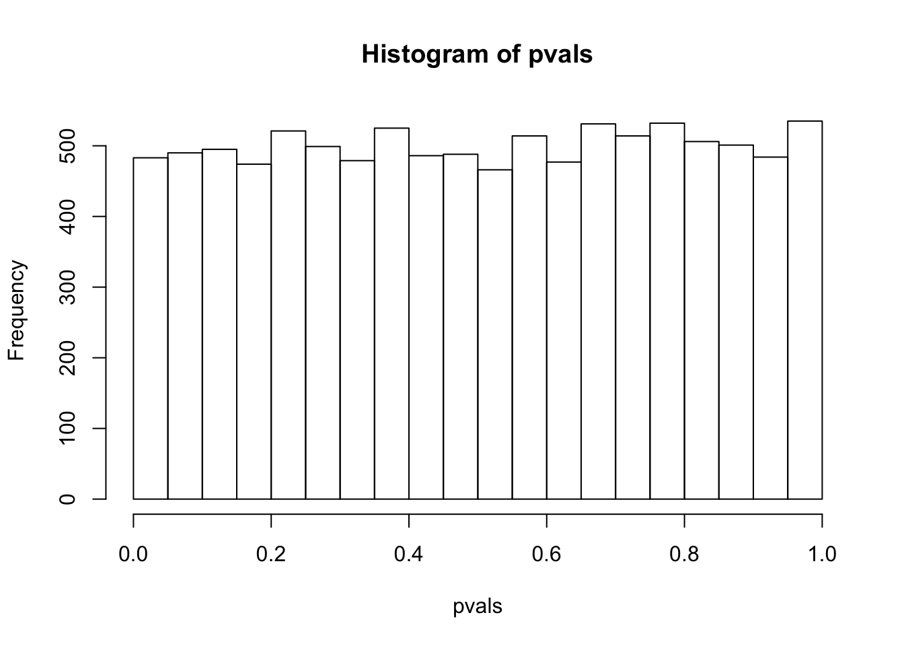
| Version | Author | Date |
|---|---|---|
| e144542 | jgblanc | 2021-05-04 |
Selection Case
vecQx <- matrix(rep(0, 10000))
pvals <- rep(0, 10000)
for(i in 1:10000) {
vecQx[i] <- calc_Qx(0.005, 2, 100, 100)
pvals[i] <- pchisq(vecQx[i],1, lower.tail = F)
}
mean(vecQx)[1] 3.860192hist(pvals)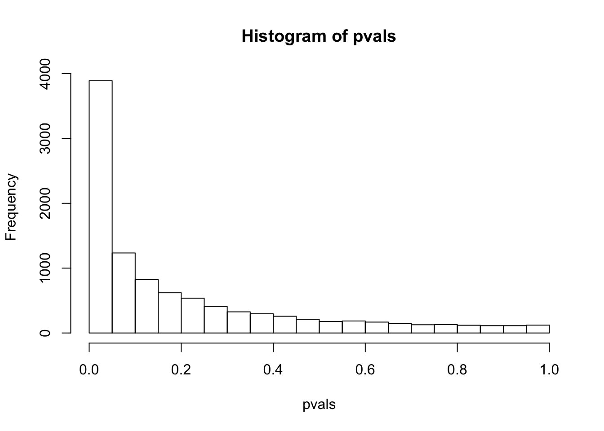
| Version | Author | Date |
|---|---|---|
| e144542 | jgblanc | 2021-05-04 |
Exact same procedure as above but first generate individuals and re-estimate allele frequencies from genotype matrix. (Just to make sure I can make genotype matrices)
make_genotype_matrix <- function(p, n, L) {
G <- matrix(NA, nrow = n, ncol = L)
for (i in 1:length(p)) {
G[,i] <- rbinom(n,2,p[i])
}
return(G)
}
calc_Qx1 <- function(ms, k, n, L, L_gwas) {
# Draw alleles from Beta
p_start <- rbeta(L, 1,3)
p_start_gwas <- rbeta(L_gwas, 1,3)
# Evolve GWAS alleles (ms = mean shift to add direction to frequency change)
p1GWAS <- p_start_gwas + rnorm(L_gwas, ms, sqrt((p_start_gwas)*(1-p_start_gwas)* 0.01))
p2GWAS <- p_start_gwas + rnorm(L_gwas, -ms, sqrt((p_start_gwas)*(1-p_start_gwas) *0.01))
rm <- which(p1GWAS < 0 | p1GWAS > 1 | p2GWAS < 0 | p2GWAS > 1)
if (length(rm) > 0) {
p1GWAS <- p1GWAS[-rm]
p2GWAS <- p2GWAS[-rm]
}
# Evolve neautral alleles vias drift
p1N <- p_start + rnorm(L, 0, sqrt((p_start_gwas)*(1-p_start_gwas)* 0.01))
p2N <- p_start + rnorm(L, 0, sqrt((p_start_gwas)*(1-p_start_gwas)* 0.01))
rm <- which(p1N < 0 | p1N > 1 | p2N < 0 | p2N > 1)
if (length(rm) > 0) {
p1N <- p1N[-rm]
p2N <- p2N[-rm]
}
# Make Genotype matrix for GWAS alleles by drawing from population
i1GWAS <- make_genotype_matrix(p1GWAS, n/2, length(p1GWAS))
i2GWAS <- make_genotype_matrix(p2GWAS, n/2, length(p2GWAS))
# Make Genotype matrix for neautral alleles by drawing from population
i1N <- make_genotype_matrix(p1N, n/2, length(p1N))
i2N <- make_genotype_matrix(p2N, n/2, length(p2N))
# Neutral Gentotype Matrix
X <- rbind(i1N, i2N)
if (length(which(colSums(X) == 0)) > 0 | length(which(colSums(X) == nrow(X))) > 0 ){
if (length(which(colSums(X) == 0)) > 0) { X <- X[, -which(colSums(X) == 0)]}
if (length(which(colSums(X) == nrow(X))) > 0) {X <- X[, -which(colSums(X) == nrow(X))]}
}
# GWAS Xentotype Matrix
X_gwas <- rbind(i1GWAS, i2GWAS)
if (length(which(colSums(X_gwas) == 0)) > 0 | length(which(colSums(X_gwas) == nrow(X_gwas))) > 0 ){
if (length(which(colSums(X_gwas) == 0)) > 0) { X_gwas <- X_gwas[, -which(colSums(X_gwas) == 0)]}
if (length(which(colSums(X_gwas) == nrow(X_gwas))) > 0) {X_gwas <- X_gwas[, -which(colSums(X_gwas) == nrow(X_gwas))]}
}
p1GWAS <- colMeans(X_gwas[1:(n/2), ])/2
p2GWAS <- colMeans(X_gwas[((n/2)+1):n, ])/2
p1N <- colMeans(X[1:(n/2), ])/2
p2N <- colMeans(X[((n/2)+1):n, ])/2
# Compute mean PGS
Z1 <- 2 * sum(p1GWAS)
Z2 <- 2 * sum(p2GWAS)
# Mean centering matrix
Tmat <- matrix(-1/k, nrow = 1, ncol = 2)
diag(Tmat) <- (k-1)/k
# Mean center PGS
Zp <- Tmat %*% c(Z1, Z2)
# Compute F matrix
G <- rbind(p1N, p2N)
S <- matrix(0, ncol(G),ncol(G))
diag(S) <- 1 / (colMeans(G) * (1 - colMeans(G)))
Fmat <- (1/(ncol(G)-1)) * (Tmat %*% G %*% S %*% t(G) %*% t(Tmat))
# Compute Va
G_gwas <- rbind(p1GWAS, p2GWAS)
Va <- sum(2* (colMeans(G_gwas) * (1 - colMeans(G_gwas))))
# Compute Qx
Qx <- (t(Zp) %*% solve(Fmat) %*% Zp) / (2*Va)
return(Qx[1,1])
}Neutral
vecQx <- matrix(rep(0, 1000))
pvals <- rep(0, 1000)
for(i in 1:1000) {
vecQx[i] <- calc_Qx1(0, 2, 100, 100, 100)
pvals[i] <- pchisq(vecQx[i], 1, lower.tail = F)
}
mean(vecQx)[1] 0.9985191hist(pvals)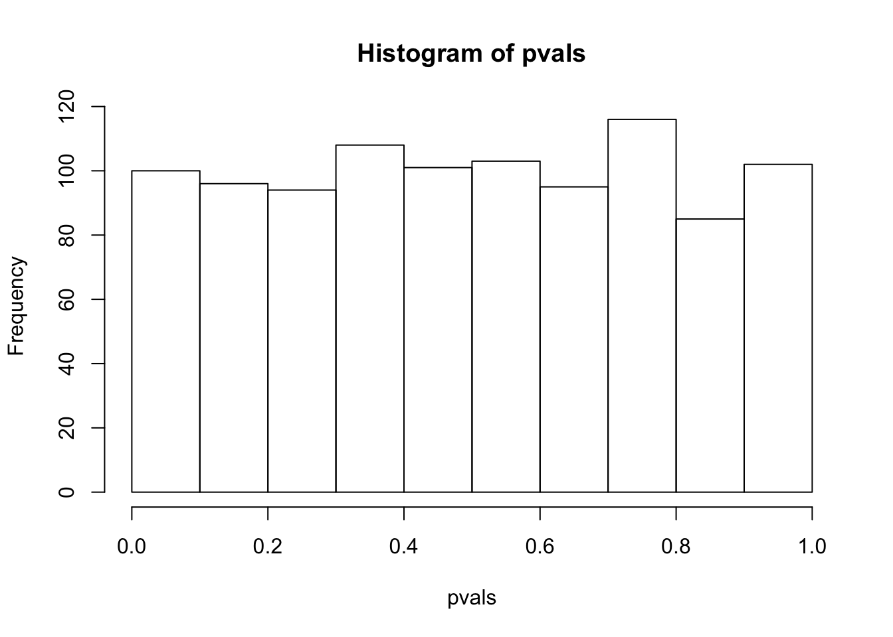
| Version | Author | Date |
|---|---|---|
| e144542 | jgblanc | 2021-05-04 |
Selection
vecQx <- matrix(rep(0, 1000))
pvals <- rep(0, 1000)
for(i in 1:1000) {
vecQx[i] <- calc_Qx1(0.005, 2, 100, 100, 100)
pvals[i] <- pchisq(vecQx[i], 1, lower.tail = F)
}
mean(vecQx)[1] 2.517753hist(pvals)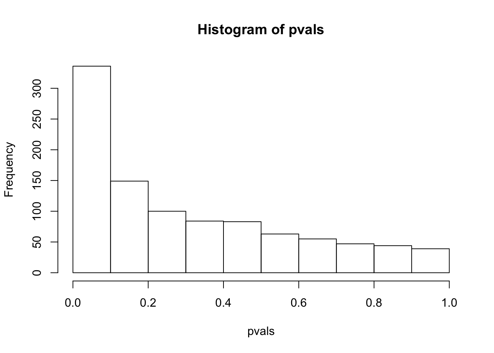
| Version | Author | Date |
|---|---|---|
| e144542 | jgblanc | 2021-05-04 |
Now we want to do that exact same test as above but instead of estimating population allele frequencies directly from the genotype matrix we want to reformulate the \(Q_x\) statistic to detect selection along a specific test vector. In this case the test vect just indicated population membership. See handwritten notes to see the derivation of \(Q_{x,test}\):
\[Q_{x,test} = \frac{\vec{Z}_{test}^2}{V_aF_{test}}\]
Here note that:
\[F_{test} = \frac{1}{L-1}T_{vec}XHX^TT_{vec}^T\]
calc_Qx2 <- function(ms, k, n, L, L_gwas) {
# Draw alleles from Beta
p_start <- rbeta(L, 1,3)
p_start_gwas <- rbeta(L_gwas, 1,3)
# Evolve GWAS alleles (ms = mean shift to add direction to frequency change)
p1GWAS <- p_start_gwas + rnorm(L_gwas, ms, sqrt((p_start_gwas)*(1-p_start_gwas)* 0.01))
p2GWAS <- p_start_gwas + rnorm(L_gwas, -ms, sqrt((p_start_gwas)*(1-p_start_gwas) *0.01))
rm <- which(p1GWAS < 0 | p1GWAS > 1 | p2GWAS < 0 | p2GWAS > 1)
if (length(rm) > 0) {
p1GWAS <- p1GWAS[-rm]
p2GWAS <- p2GWAS[-rm]
}
# Evolve neautral alleles vias drift
p1N <- p_start + rnorm(L, 0, sqrt((p_start_gwas)*(1-p_start_gwas)* 0.01))
p2N <- p_start + rnorm(L, 0, sqrt((p_start_gwas)*(1-p_start_gwas)* 0.01))
rm <- which(p1N < 0 | p1N > 1 | p2N < 0 | p2N > 1)
if (length(rm) > 0) {
p1N <- p1N[-rm]
p2N <- p2N[-rm]
}
# Make Genotype matrix for GWAS alleles by drawing from population
i1GWAS <- make_genotype_matrix(p1GWAS, n/2, length(p1GWAS))
i2GWAS <- make_genotype_matrix(p2GWAS, n/2, length(p2GWAS))
# Make Genotype matrix for neautral alleles by drawing from population
i1N <- make_genotype_matrix(p1N, n/2, length(p1N))
i2N <- make_genotype_matrix(p2N, n/2, length(p2N))
# Neutral Gentotype Matrix
X <- rbind(i1N, i2N)
if (length(which(colSums(X) == 0)) > 0 | length(which(colSums(X) == nrow(X))) > 0 ){
if (length(which(colSums(X) == 0)) > 0) { X <- X[, -which(colSums(X) == 0)]}
if (length(which(colSums(X) == nrow(X))) > 0) {X <- X[, -which(colSums(X) == nrow(X))]}
}
# GWAS Xentotype Matrix
X_gwas <- rbind(i1GWAS, i2GWAS)
if (length(which(colSums(X_gwas) == 0)) > 0 | length(which(colSums(X_gwas) == nrow(X_gwas))) > 0 ){
if (length(which(colSums(X_gwas) == 0)) > 0) { X_gwas <- X_gwas[, -which(colSums(X_gwas) == 0)]}
if (length(which(colSums(X_gwas) == nrow(X_gwas))) > 0) {X_gwas <- X_gwas[, -which(colSums(X_gwas) == nrow(X_gwas))]}
}
# Compute Individual PGS
Z <- rowSums(X_gwas)
# Make test vector and compute Ztest
Tvec <- c(rep(1,(n/2))/(n/2), rep(-1,(n/2))/(n/2)) * 0.5
Ztest <- Z %*% Tvec
# Compute Ftest matrix
H <- matrix(0, ncol(X),ncol(X))
diag(H) <- 1 / (2 * colMeans(X/2) * (1 - colMeans(X/2)))
Fmat <- (1/(ncol(X)-1)) * (Tvec %*% X %*% H %*% t(X) %*% Tvec)
# Compute Va
Va <- 2*sum((colMeans(X_gwas/2) * (1 - colMeans(X_gwas/2))))
# Compute Qx
Qx <- (t(Ztest) %*% solve(Fmat) %*% Ztest) / (Va)
return(Qx[1,1])
}Neutral
vecQx <- matrix(rep(0, 1000))
pvals <- rep(0, 1000)
for(i in 1:1000) {
vecQx[i] <- calc_Qx2(0, 2, 100, 100, 100)
pvals[i] <- pchisq(vecQx[i], 1, lower.tail = F)
}
mean(vecQx)[1] 1.00656hist(pvals)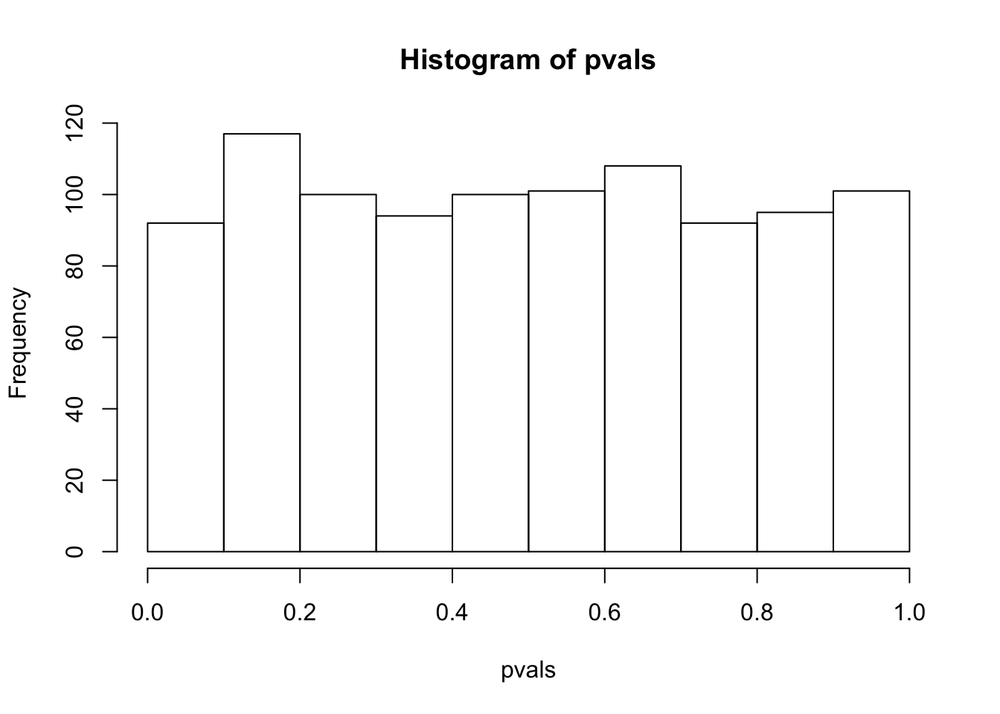
| Version | Author | Date |
|---|---|---|
| e144542 | jgblanc | 2021-05-04 |
Selection
vecQx <- matrix(rep(0, 1000))
pvals <- rep(0, 1000)
for(i in 1:1000) {
vecQx[i] <- calc_Qx2(0.005, 2, 100, 100, 100)
pvals[i] <- pchisq(vecQx[i], 1, lower.tail = F)
}
mean(vecQx)[1] 2.461135hist(pvals)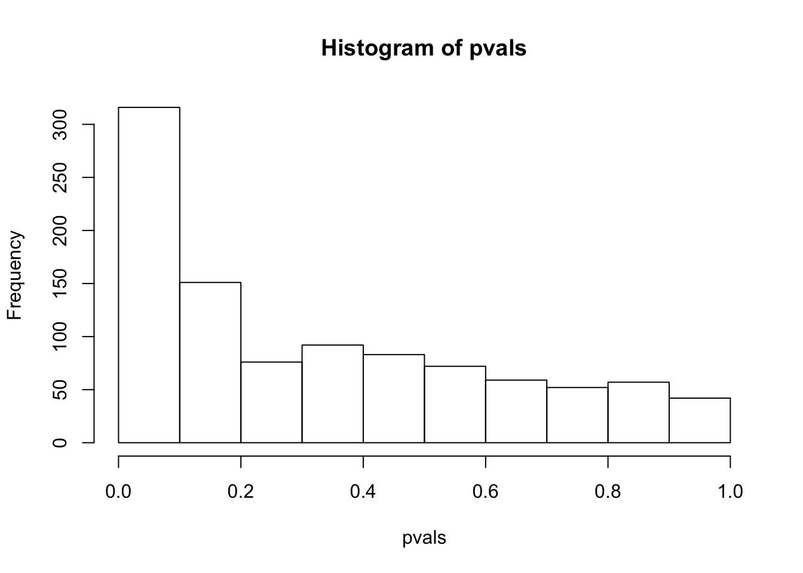
| Version | Author | Date |
|---|---|---|
| e144542 | jgblanc | 2021-05-04 |
Same as the example above except when computing \(F_{test}\), first mean center the genotype matrix. I am doing this so \(TXHX^TT^T\) is the definiation of the GRM used GCTA/Plink. Each entry of the GRM is:
\[K_{ij} = \sum\limits_{l=1}^L \frac{(x_{i,l} - 2f_l)(x_{j,l} -f_l)}{2f_l (1-f_l)}\]
\(F_{test}\) is the same (mean centering X does not change anything), we are just including the mean centering to match plink:
\[F_{test} = \frac{1}{L-1}T_{vec}TXHX^TT^TT_{vec}^T\]
calc_Qx3 <- function(ms, k, n, L, L_gwas) {
# Draw alleles from Beta
p_start <- rbeta(L, 1,3)
p_start_gwas <- rbeta(L_gwas, 1,3)
# Evolve GWAS alleles (ms = mean shift to add direction to frequency change)
p1GWAS <- p_start_gwas + rnorm(L_gwas, ms, sqrt((p_start_gwas)*(1-p_start_gwas)* 0.01))
p2GWAS <- p_start_gwas + rnorm(L_gwas, -ms, sqrt((p_start_gwas)*(1-p_start_gwas) *0.01))
rm <- which(p1GWAS < 0 | p1GWAS > 1 | p2GWAS < 0 | p2GWAS > 1)
if (length(rm) > 0) {
p1GWAS <- p1GWAS[-rm]
p2GWAS <- p2GWAS[-rm]
}
# Evolve neautral alleles vias drift
p1N <- p_start + rnorm(L, 0, sqrt((p_start_gwas)*(1-p_start_gwas)* 0.01))
p2N <- p_start + rnorm(L, 0, sqrt((p_start_gwas)*(1-p_start_gwas)* 0.01))
rm <- which(p1N < 0 | p1N > 1 | p2N < 0 | p2N > 1)
if (length(rm) > 0) {
p1N <- p1N[-rm]
p2N <- p2N[-rm]
}
# Make Genotype matrix for GWAS alleles by drawing from population
i1GWAS <- make_genotype_matrix(p1GWAS, n/2, length(p1GWAS))
i2GWAS <- make_genotype_matrix(p2GWAS, n/2, length(p2GWAS))
# Make Genotype matrix for neautral alleles by drawing from population
i1N <- make_genotype_matrix(p1N, n/2, length(p1N))
i2N <- make_genotype_matrix(p2N, n/2, length(p2N))
# Neutral Gentotype Matrix
X <- rbind(i1N, i2N)
if (length(which(colSums(X) == 0)) > 0 | length(which(colSums(X) == nrow(X))) > 0 ){
if (length(which(colSums(X) == 0)) > 0) { X <- X[, -which(colSums(X) == 0)]}
if (length(which(colSums(X) == nrow(X))) > 0) {X <- X[, -which(colSums(X) == nrow(X))]}
}
# GWAS Xentotype Matrix
X_gwas <- rbind(i1GWAS, i2GWAS)
if (length(which(colSums(X_gwas) == 0)) > 0 | length(which(colSums(X_gwas) == nrow(X_gwas))) > 0 ){
if (length(which(colSums(X_gwas) == 0)) > 0) { X_gwas <- X_gwas[, -which(colSums(X_gwas) == 0)]}
if (length(which(colSums(X_gwas) == nrow(X_gwas))) > 0) {X_gwas <- X_gwas[, -which(colSums(X_gwas) == nrow(X_gwas))]}
}
# Compute Individual PGS
Z <- rowSums(X_gwas)
# Make test vector and compute Ztest
Tvec <- c(rep(1,(n/2))/(n/2), rep(-1,(n/2))/(n/2)) * 0.5
Ztest <- Z %*% Tvec
# Compute Ftest matrix
H <- matrix(0, ncol(X),ncol(X))
diag(H) <- 1 / (2 * colMeans(X/2) * (1 - colMeans(X/2)))
Tmat <- matrix(-1/n, ncol = n, nrow = n)
diag(Tmat) <- (n-1)/n
cov_mat <- (1/(ncol(X)-1)) * Tmat %*% X %*% H %*% t(X) %*% t(Tmat)
Fmat <- (Tvec %*% cov_mat %*% Tvec)
# Compute Va
Va <- 2*sum((colMeans(X_gwas/2) * (1 - colMeans(X_gwas/2))))
# Compute Qx
Qx <- (t(Ztest) %*% solve(Fmat) %*% Ztest) / (Va)
return(Qx[1,1])
}Neutral
vecQx <- matrix(rep(0, 100))
pvals <- rep(0, 100)
for(i in 1:100) {
out <- calc_Qx3(0, 2, 100, 1000, 100)
vecQx[i] <- out[[1]]
pvals[i] <- pchisq(vecQx[i], 1, lower.tail = F)
}
mean(vecQx)[1] NaNhist(pvals)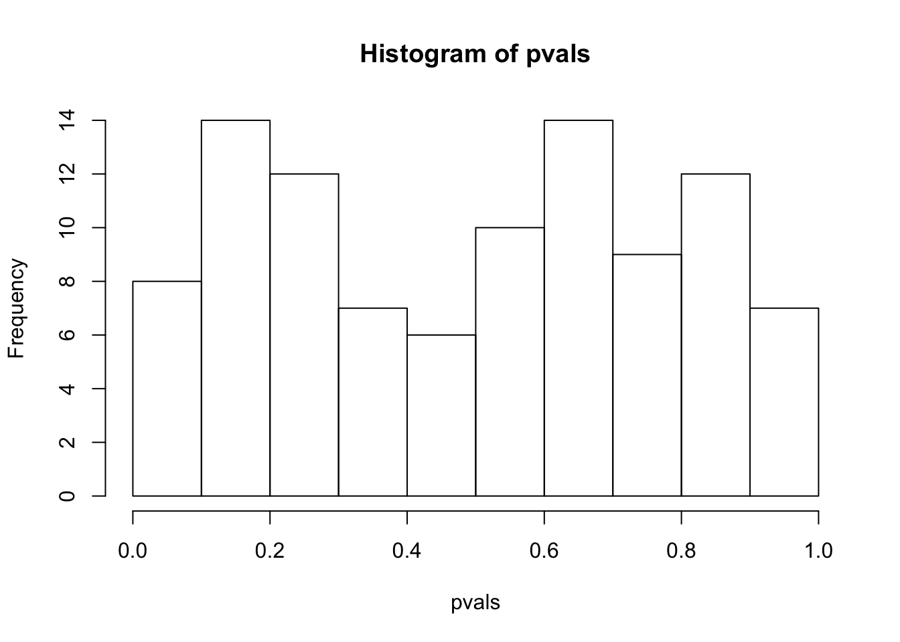
| Version | Author | Date |
|---|---|---|
| e144542 | jgblanc | 2021-05-04 |
Selection
vecQx <- matrix(rep(0, 100))
pvals <- rep(0, 100)
for(i in 1:100) {
out <- calc_Qx3(0.005, 2, 100, 100, 100)
vecQx[i] <- out[[1]]
pvals[i] <- pchisq(vecQx[i], 1, lower.tail = F)
}
mean(vecQx)[1] 2.250307hist(pvals)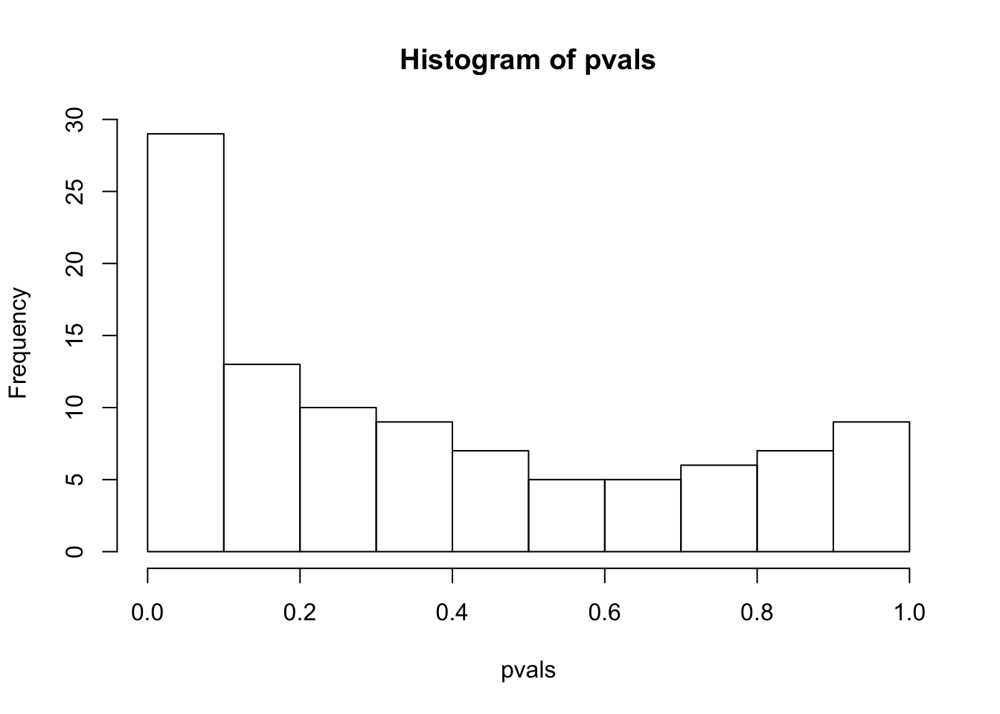
| Version | Author | Date |
|---|---|---|
| e144542 | jgblanc | 2021-05-04 |
Since we don’t want to do this large matrix multiplication \[TXHX^TT^T\] we can rewrite \(F_{test}\) as
\[F_{test} = \frac{1}{L-1}T_{vec}U\Delta UT_{vec}^T\]
Here \(U\) and \(\Delta\) are the eigenvectors and eigenvalues from doing eigen decomposition on the GRM. In the simulation below we make the GRM, do eigen decomposition and then remake it.
calc_Qx4 <- function(ms, k, n, L, L_gwas) {
# Draw alleles from Beta
p_start <- rbeta(L, 1,3)
p_start_gwas <- rbeta(L_gwas, 1,3)
# Evolve GWAS alleles (ms = mean shift to add direction to frequency change)
p1GWAS <- p_start_gwas + rnorm(L_gwas, ms, sqrt((p_start_gwas)*(1-p_start_gwas)* 0.01))
p2GWAS <- p_start_gwas + rnorm(L_gwas, -ms, sqrt((p_start_gwas)*(1-p_start_gwas) *0.01))
rm <- which(p1GWAS < 0 | p1GWAS > 1 | p2GWAS < 0 | p2GWAS > 1)
if (length(rm) > 0) {
p1GWAS <- p1GWAS[-rm]
p2GWAS <- p2GWAS[-rm]
}
# Evolve neautral alleles vias drift
p1N <- p_start + rnorm(L, 0, sqrt((p_start_gwas)*(1-p_start_gwas)* 0.01))
p2N <- p_start + rnorm(L, 0, sqrt((p_start_gwas)*(1-p_start_gwas)* 0.01))
rm <- which(p1N < 0 | p1N > 1 | p2N < 0 | p2N > 1)
if (length(rm) > 0) {
p1N <- p1N[-rm]
p2N <- p2N[-rm]
}
# Make Genotype matrix for GWAS alleles by drawing from population
i1GWAS <- make_genotype_matrix(p1GWAS, n/2, length(p1GWAS))
i2GWAS <- make_genotype_matrix(p2GWAS, n/2, length(p2GWAS))
# Make Genotype matrix for neautral alleles by drawing from population
i1N <- make_genotype_matrix(p1N, n/2, length(p1N))
i2N <- make_genotype_matrix(p2N, n/2, length(p2N))
# Neutral Gentotype Matrix
X <- rbind(i1N, i2N)
if (length(which(colSums(X) == 0)) > 0 | length(which(colSums(X) == nrow(X))) > 0 ){
if (length(which(colSums(X) == 0)) > 0) { X <- X[, -which(colSums(X) == 0)]}
if (length(which(colSums(X) == nrow(X))) > 0) {X <- X[, -which(colSums(X) == nrow(X))]}
}
# GWAS Xentotype Matrix
X_gwas <- rbind(i1GWAS, i2GWAS)
if (length(which(colSums(X_gwas) == 0)) > 0 | length(which(colSums(X_gwas) == nrow(X_gwas))) > 0 ){
if (length(which(colSums(X_gwas) == 0)) > 0) { X_gwas <- X_gwas[, -which(colSums(X_gwas) == 0)]}
if (length(which(colSums(X_gwas) == nrow(X_gwas))) > 0) {X_gwas <- X_gwas[, -which(colSums(X_gwas) == nrow(X_gwas))]}
}
# Compute Individual PGS
Z <- rowSums(X_gwas)
# Make test vector and compute Ztest
Tvec <- c(rep(1,(n/2))/(n/2), rep(-1,(n/2))/(n/2)) * 0.5
Ztest <- Z %*% Tvec
# Compute GRM
het <- 1 / (2 * colMeans(X/2) * (1 - colMeans(X/2)))
Tmat <- matrix(-1/n, ncol = n, nrow = n)
diag(Tmat) <- (n-1)/n
cov_mat <- (1/(ncol(X)-1)) * Tmat %*% t(t(X) * het) %*% t(X) %*% t(Tmat)
# Do Eigen decomposition and calculate Ftest
myE <- eigen(cov_mat)
K <- myE$vectors %*% diag(myE$values) %*% t(myE$vectors)
Fmat <- (Tvec %*% K %*% Tvec)
# Compute Va
Va <- 2*sum((colMeans(X_gwas/2) * (1 - colMeans(X_gwas/2))))
# Compute Qx
Qx <- (t(Ztest) %*% solve(Fmat) %*% Ztest) / (Va)
return(Qx[1,1])
}Neutral
vecQx <- matrix(rep(0, 500))
pvals <- rep(0, 500)
for(i in 1:500) {
out <- calc_Qx4(0, 2, 100, 100, 100)
vecQx[i] <- out[[1]]
pvals[i] <- pchisq(vecQx[i], 1, lower.tail = F)
}
mean(vecQx)[1] 1.057855hist(pvals)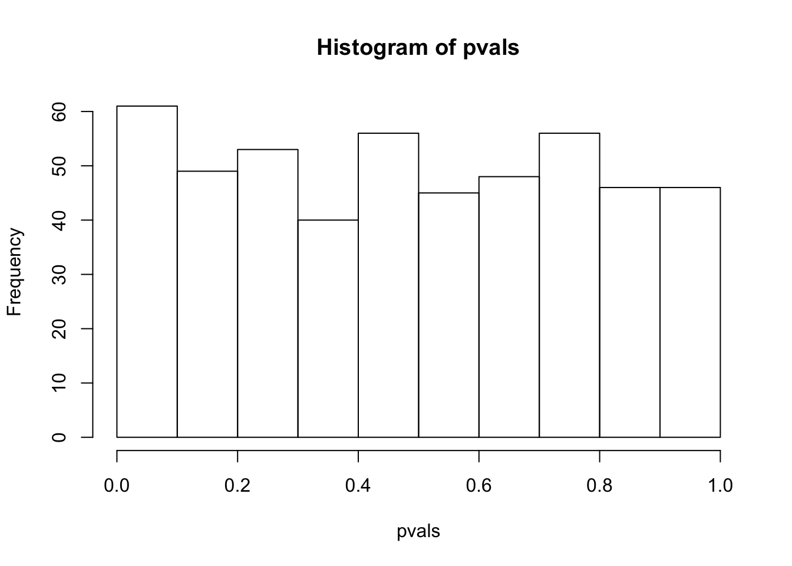
| Version | Author | Date |
|---|---|---|
| e144542 | jgblanc | 2021-05-04 |
Selection
vecQx <- matrix(rep(0, 100))
pvals <- rep(0, 100)
for(i in 1:100) {
out <- calc_Qx4(0.005, 2, 100, 100, 100)
vecQx[i] <- out[[1]]
pvals[i] <- pchisq(vecQx[i], 1, lower.tail = F)
}
mean(vecQx)[1] 2.806704hist(pvals)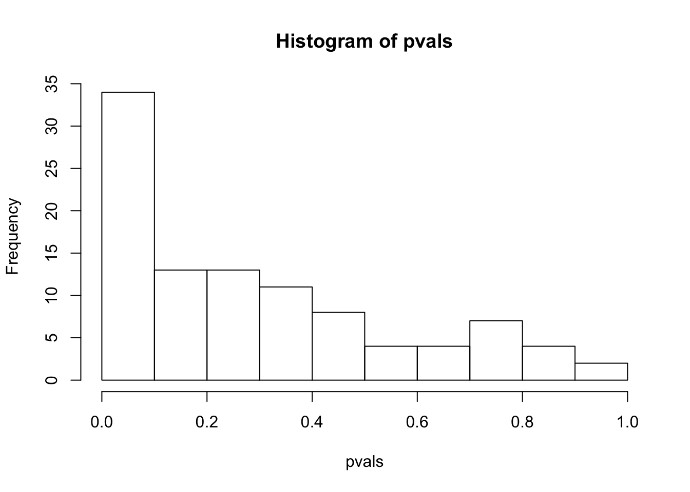
| Version | Author | Date |
|---|---|---|
| e144542 | jgblanc | 2021-05-04 |
The only thing that changes here is that were are going to draw \(\hat{B}\)’s randomly and then include them in our calculation of \(\vec{Z}\) and \(V_a\).
calc_Qx5 <- function(ms, k, n, L, L_gwas) {
# Draw alleles from Beta
p_start <- rbeta(L, 1,3)
p_start_gwas <- rbeta(L_gwas, 1,3)
# Evolve GWAS alleles (ms = mean shift to add direction to frequency change)
p1GWAS <- p_start_gwas + rnorm(L_gwas, ms, sqrt((p_start_gwas)*(1-p_start_gwas)* 0.01))
p2GWAS <- p_start_gwas + rnorm(L_gwas, -ms, sqrt((p_start_gwas)*(1-p_start_gwas) *0.01))
rm <- which(p1GWAS < 0 | p1GWAS > 1 | p2GWAS < 0 | p2GWAS > 1)
if (length(rm) > 0) {
p1GWAS <- p1GWAS[-rm]
p2GWAS <- p2GWAS[-rm]
}
# Evolve neautral alleles vias drift
p1N <- p_start + rnorm(L, 0, sqrt((p_start_gwas)*(1-p_start_gwas)* 0.01))
p2N <- p_start + rnorm(L, 0, sqrt((p_start_gwas)*(1-p_start_gwas)* 0.01))
rm <- which(p1N < 0 | p1N > 1 | p2N < 0 | p2N > 1)
if (length(rm) > 0) {
p1N <- p1N[-rm]
p2N <- p2N[-rm]
}
# Make Genotype matrix for GWAS alleles by drawing from population
i1GWAS <- make_genotype_matrix(p1GWAS, n/2, length(p1GWAS))
i2GWAS <- make_genotype_matrix(p2GWAS, n/2, length(p2GWAS))
# Make Genotype matrix for neautral alleles by drawing from population
i1N <- make_genotype_matrix(p1N, n/2, length(p1N))
i2N <- make_genotype_matrix(p2N, n/2, length(p2N))
# Neutral Gentotype Matrix
X <- rbind(i1N, i2N)
if (length(which(colSums(X) == 0)) > 0 | length(which(colSums(X) == nrow(X))) > 0 ){
if (length(which(colSums(X) == 0)) > 0) { X <- X[, -which(colSums(X) == 0)]}
if (length(which(colSums(X) == nrow(X))) > 0) {X <- X[, -which(colSums(X) == nrow(X))]}
}
# GWAS Xentotype Matrix
X_gwas <- rbind(i1GWAS, i2GWAS)
if (length(which(colSums(X_gwas) == 0)) > 0 | length(which(colSums(X_gwas) == nrow(X_gwas))) > 0 ){
if (length(which(colSums(X_gwas) == 0)) > 0) { X_gwas <- X_gwas[, -which(colSums(X_gwas) == 0)]}
if (length(which(colSums(X_gwas) == nrow(X_gwas))) > 0) {X_gwas <- X_gwas[, -which(colSums(X_gwas) == nrow(X_gwas))]}
}
# Simulate Beta Hats
Bhat <- rnorm(ncol(X_gwas), 0,1)
# Compute Individual PGS
Z <- rowSums(X_gwas %*% diag(Bhat))
# Make test vector and compute Ztest
Tvec <- c(rep(1,(n/2))/(n/2), rep(-1,(n/2))/(n/2)) * 0.5
Ztest <- Z %*% Tvec
# Compute GRM
H <- matrix(0, ncol(X),ncol(X))
diag(H) <- 1 / (2 * colMeans(X/2) * (1 - colMeans(X/2)))
Tmat <- matrix(-1/n, ncol = n, nrow = n)
diag(Tmat) <- (n-1)/n
cov_mat <- (1/(ncol(X)-1)) * Tmat %*% X %*% H %*% t(X) %*% t(Tmat)
# Do Eigen decomposition and calculate Ftest
myE <- eigen(cov_mat)
K <- myE$vectors %*% diag(myE$values) %*% t(myE$vectors)
Fmat <- (Tvec %*% K %*% Tvec)
# Compute Va
Va <- 2*sum(Bhat^2 * (colMeans(X_gwas/2) * (1 - colMeans(X_gwas/2))))
# Compute Qx
Qx <- (t(Ztest) %*% solve(Fmat) %*% Ztest) / (Va)
return(Qx[1,1])
}Neutral
vecQx <- matrix(rep(0, 500))
pvals <- rep(0, 500)
for(i in 1:500) {
out <- calc_Qx5(0, 2, 100, 100, 100)
vecQx[i] <- out[[1]]
pvals[i] <- pchisq(vecQx[i], 1, lower.tail = F)
}
mean(vecQx)[1] 1.115457hist(pvals)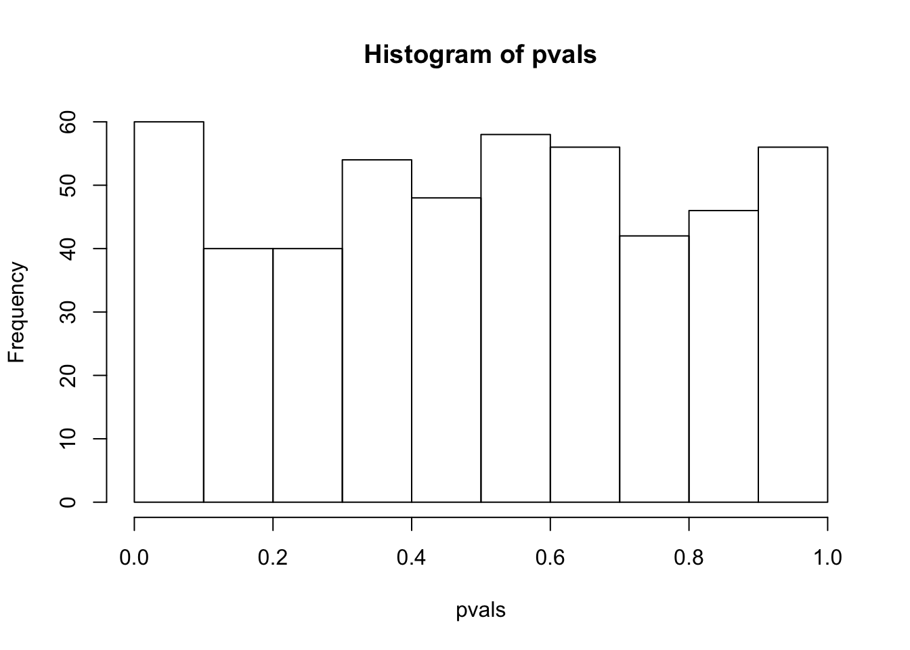
| Version | Author | Date |
|---|---|---|
| e144542 | jgblanc | 2021-05-04 |
Selection
vecQx <- matrix(rep(0, 100))
pvals <- rep(0, 100)
for(i in 1:100) {
out <- calc_Qx4(0.005, 2, 100, 100, 100)
vecQx[i] <- out[[1]]
pvals[i] <- pchisq(vecQx[i], 1, lower.tail = F)
}
mean(vecQx)[1] 2.207044hist(pvals)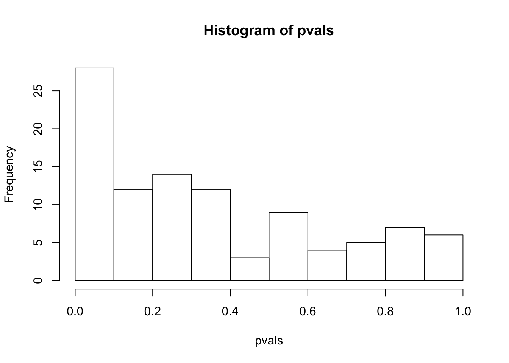
| Version | Author | Date |
|---|---|---|
| e144542 | jgblanc | 2021-05-04 |
So far we have checked that we were doing things correctly by running the simulations many times and looking at the distribution of the output. Its going to be too hard to run 10,000 evolutionary simulations so I am going to do one small evolutionary replicate using only 1 chromozome using my snakemake pipeline and then check each part of the \(Q_x\) calculation (\(Va\), \(F\), \(Z_{test}\)), comparing the code above to make sure each part matches.
Read in Genotype matrix
library(pgenlibr)
pvar <- NewPvar("../output/Simulate_Genotypes/4PopSplit/E1/C1/genos-test_common.pvar")
d1 <- NewPgen("../output/Simulate_Genotypes/4PopSplit/E1/C1/genos-test_common.pgen")
X <- ReadList(d1,seq(1,48607), meanimpute=F)Calculate \(F_{test} = \frac{1}{L-1}T_{vec}TXHX^TT^TT_{vec}^T\)
# Read in and format Test Vector
Tvec <- fread("../output/Calculate_Tm/4PopSplit/E1/C1/Tvec.txt")
Tvec <- Tvec$V1
n1 <- table(Tvec)[1]
n2 <- table(Tvec)[2]
Tvec <- c(rep(1,(n1))/(n1), rep(-1,(n2))/(n2)) * (1/2)
# Compute GRM
n <- nrow(X)
het <- 1 / (2 * colMeans(X/2) * (1 - colMeans(X/2)))
Tmat <- matrix(-1/n, ncol = n, nrow = n)
diag(Tmat) <- (n-1)/n
cov_mat <- (1/(ncol(X)-1)) * Tmat %*% t(t(X) * het) %*% t(X) %*% t(Tmat)
# Calculate F
Fmat <- (Tvec %*% cov_mat %*% Tvec)
print(paste0("F is ", Fmat))[1] "F is 0.217570451036332"Calculate \(F_{test} = \frac{1}{L-1}T_{vec}U\Delta UT_{vec}^T\) doing eigen decomposition in R
myE <- eigen(cov_mat)
K <- myE$vectors %*% diag(myE$values) %*% t(myE$vectors)
Fmat <- (Tvec %*% K %*% Tvec)
print(paste0("F is ", Fmat))[1] "F is 0.217570451036332"Now calculate \(F_t{test}\) using the eigenvectors/values as computed by plink.
plink_vecs <- fread("../output/Calculate_Tm/4PopSplit/E1/C1/pca.eigenvec")[,3:201]
plink_vecs <- apply(plink_vecs, 2, as.numeric)
plink_vals <- fread("../output/Calculate_Tm/4PopSplit/E1/C1/pca.eigenval")
plink_vals <- as.numeric(plink_vals$V1)
K <- plink_vecs %*% diag(plink_vals) %*% t(plink_vecs)
Fmat <- (Tvec %*% K %*% Tvec)
print(paste0("F is ", Fmat))[1] "F is 0.217566022811625"Finally let’s check the output of the snakemake pipeline to make sure it matches
lambdaT <- fread("../output/Calculate_Tm/4PopSplit/E1/C1/Lambda_T.txt")
print(paste0("F is ", lambdaT$V1))[1] "F is 0.217566022811625"Yay!!
Now we need to chech that \(Z_{test}\) matches the output of the snakemake pipeline. We will do this for 2 sets of the effect sizes, the “causal” effect sizes (this trait has \(h^2 = 0\) so the sites aren’t causal just randomly picked to include in the PGS) and the clumped sites.
Function to read in PGS and substract true genetic values
stand_PGS <- function(prs_file, gv_file) {
# Load PRS
prs <- fread(prs_file)
colnames(prs) <- c("#IID", "NAMED_ALLELE_DOSAGE_SUM", "RANDOM", "STRAT")
# Load True GV
gvalue <- fread(gv_file)
colnames(gvalue) <- c("#IID", "NAMED_ALLELE_DOSAGE_SUM", "GV")
# Join dataframes by IID
df <- suppressMessages(full_join(prs,gvalue, by ="#IID")) %>% select("#IID", "RANDOM", "STRAT", "GV")
# Standardize
mprs.adj = df%>%
mutate(random.adjusted = RANDOM-GV,
strat.adjusted = STRAT-GV) %>%
ungroup() %>% select("random.adjusted", "strat.adjusted")
return(mprs.adj)
}
pgs.c <- stand_PGS("../output/PRS/4PopSplit/E1/C1/h2-0/env-0/genos-test_common.c.sscore", "../output/PRS/4PopSplit/E1/C1/h2-0/genos-test_common.true.sscore")
pgs.nc <- stand_PGS("../output/PRS/4PopSplit/E1/C1/h2-0/env-0/genos-test_common.nc.sscore", "../output/PRS/4PopSplit/E1/C1/h2-0/genos-test_common.true.sscore")Calculate \(Z_{test}\) as done in pipeline
# Load Test vector
Tvec <- fread("../output/Calculate_Tm/4PopSplit/E1/C1/Tvec.txt")
n1 <- table(Tvec)[1]
n2 <- table(Tvec)[2]
Tvec <- c(rep(1,(n1))/(n1), rep(-1,(n2))/(n2)) * (1/2)
# Compute Ztest for causal
Ztest.c_random <- t(Tvec) %*% pgs.c$random.adjusted
Ztest.c_strat <- t(Tvec) %*% pgs.c$strat.adjusted
# Compute Ztest for non causal
Ztest.nc_random <- t(Tvec) %*% pgs.nc$random.adjusted
Ztest.nc_strat <- t(Tvec) %*% pgs.nc$strat.adjusted # Its strange that this is larger than random given that there is no stratification?? Come back and check
print(paste0("Ztest for causal random is ", Ztest.c_random))[1] "Ztest for causal random is -1.1582494674"print(paste0("Ztest for causal strat is ", Ztest.c_strat))[1] "Ztest for causal strat is -1.248883504"print(paste0("Ztest for non-causal random is ", Ztest.nc_random))[1] "Ztest for non-causal random is -1.48584151"print(paste0("Ztest for non-causal random is ", Ztest.nc_strat))[1] "Ztest for non-causal random is -5.727520825"These are the values of \(Z_{test}\) as calculated via the pipeline. Now we need to calculate it by hand using the code that we know works, starting with the genotype and estimated effect sizes.
# Name columns of genotype matrix as variant IDs
IDs <- fread("../output/Simulate_Genotypes/4PopSplit/E1/C1/genos-gwas_common.afreq")
colnames(X) <- IDs$ID
# Subset X to include only GWAS sites
c_betas <- fread("../output/PRS/4PopSplit/E1/C1/h2-0/env-0/genos-gwas_common.c.betas")
X_gwas <- X[, c_betas$ID]
# Use estimated effect sizes
Bhat <- c_betas$BETA_Random
# Compute Individual PGS
Z <- rowSums(X_gwas %*% diag(Bhat))
# Compute Ztest
Ztest.c_random <- Z %*% Tvec
print(paste0("Ztest for causal random is ", Ztest.c_random))[1] "Ztest for causal random is -1.15824944115"Repeat for other types of PGS
# Causal Strat
Bhat <- c_betas$BETA_Strat
Z <- rowSums(X_gwas %*% diag(Bhat))
Ztest.c_strat <- Z %*% Tvec
print(paste0("Ztest for causal strat is ", Ztest.c_strat))[1] "Ztest for causal strat is -1.248883519025"# Non-causal Random
nc_betas <- fread("../output/PRS/4PopSplit/E1/C1/h2-0/env-0/genos-gwas_common.nc.betas")
X_gwas <- X[,nc_betas$V1]
Bhat <- nc_betas$V3
Z <- rowSums(X_gwas %*% diag(Bhat))
Ztest.nc_random <- Z %*% Tvec
print(paste0("Ztest for non-causal random is ", Ztest.nc_random))[1] "Ztest for non-causal random is -1.485841745"# Non-causal Strat
Bhat <- nc_betas$V4
Z <- rowSums(X_gwas %*% diag(Bhat))
Ztest.nc_strat <- Z %*% Tvec
print(paste0("Ztest for non-causal strat is ", Ztest.nc_strat))[1] "Ztest for non-causal strat is -5.72752219"Yay, they match!
Now let’s check that our estimates of \(V_a\) match the output of the pipeline.
Here are the \(V_a\) estimates as output by the pipeline
Va <- fread("../output/PGA_test/4PopSplit/E1/C1/h2-0/env-0/Va.txt")
print(paste0("Va for causal random is ", Va[1,2]))[1] "Va for causal random is 0.691560402341172"print(paste0("Va for causal strat is ", Va[1,3]))[1] "Va for causal strat is 0.819447619271392"print(paste0("Va for non-causal random is ", Va[3,2]))[1] "Va for non-causal random is 5.21510142813972"print(paste0("Va for non-causal random is ", Va[3,3]))[1] "Va for non-causal random is 7.29842030416283"Now let’s check the answers doing it by hand
# Subset X to include only GWAS sites
c_betas <- fread("../output/PRS/4PopSplit/E1/C1/h2-0/env-0/genos-gwas_common.c.betas")
X_gwas <- X[, c_betas$ID]
# Use estimated effect sizes
Bhat <- c_betas$BETA_Random
Va.c_random <- 2*sum(Bhat^2 * (colMeans(X_gwas/2) * (1 - colMeans(X_gwas/2))))
print(paste0("Va for causal random is ", Va.c_random))[1] "Va for causal random is 0.691560402341172"# Causal strat
c_betas <- fread("../output/PRS/4PopSplit/E1/C1/h2-0/env-0/genos-gwas_common.c.betas")
X_gwas <- X[, c_betas$ID]
Bhat <- c_betas$BETA_Strat
Va.c_strat <- 2*sum(Bhat^2 * (colMeans(X_gwas/2) * (1 - colMeans(X_gwas/2))))
print(paste0("Va for causal strat is ", Va.c_strat))[1] "Va for causal strat is 0.819447619271392"# Non-causal random
nc_betas <- fread("../output/PRS/4PopSplit/E1/C1/h2-0/env-0/genos-gwas_common.nc.betas")
X_gwas <- X[, nc_betas$V1]
Bhat <- nc_betas$V3
Va.nc_random <- 2*sum(Bhat^2 * (colMeans(X_gwas/2) * (1 - colMeans(X_gwas/2))))
print(paste0("Va for non-causal random is ", Va.nc_random))[1] "Va for non-causal random is 5.21510142813972"# Non-causal strat
nc_betas <- fread("../output/PRS/4PopSplit/E1/C1/h2-0/env-0/genos-gwas_common.nc.betas")
X_gwas <- X[, nc_betas$V1]
Bhat <- nc_betas$V4
Va.nc_strat <- 2*sum(Bhat^2 * (colMeans(X_gwas/2) * (1 - colMeans(X_gwas/2))))
print(paste0("Va for non-causal strat is ", Va.nc_strat))[1] "Va for non-causal strat is 7.29842030416283"They match!
Finally, let’s check the final \(Q_x\) statistic!
As output by the pipeline
Qx <- fread("../output/PGA_test/4PopSplit/E1/C1/h2-0/env-0/Qx.txt")
print(paste0("Qx for causal random is ", Qx$Qx_random[1]))[1] "Qx for causal random is 8.91626622467418"print(paste0("Qx for causal strat is ", Qx$Qx_strat[1]))[1] "Qx for causal strat is 8.7484595449489"print(paste0("Qx for non-causal random is ", Qx$Qx_random[3]))[1] "Qx for non-causal random is 1.94576838206176"print(paste0("Qx for non-causal random is ", Qx$Qx_strat[3]))[1] "Qx for non-causal random is 20.6591957679714"These seem too big!
Let’s check doing it by hand
Qx.c_random <- (t(Ztest.c_random) %*% solve(Fmat) %*% Ztest.c_random) / (Va.c_random)
print(paste0("Qx for causal random is ", (t(Ztest.c_random) %*% solve(Fmat) %*% Ztest.c_random) / (Va.c_random)))[1] "Qx for causal random is 8.91626582052637"print(paste0("Qx for causal strat is ", (t(Ztest.c_strat) %*% solve(Fmat) %*% Ztest.c_strat) / (Va.c_strat)))[1] "Qx for causal strat is 8.74845975544986"print(paste0("Qx for non-causal random is ", (t(Ztest.nc_random) %*% solve(Fmat) %*% Ztest.nc_random) / (Va.nc_random)))[1] "Qx for non-causal random is 1.94576899754545"print(paste0("Qx for non-causal random is ", (t(Ztest.nc_strat) %*% solve(Fmat) %*% Ztest.nc_strat) / (Va.nc_strat)))[1] "Qx for non-causal random is 20.6592056150959"They match, but why are they so big? Is it just because this is a single chromosome so too much LD?
Now that we feel more comfortable with the actual process of calculating \(Q_x\), we ran the whole pipeline on full scale data. Let’s look at the output.
First let’s look at the situation where stratification shouldn’t matter (test populations are sister).
agg_all_data <- function(rep, dir_path, case, type, h2, env) {
Qx <- fread(paste0(dir_path, rep,"/", case, "/", h2, "/", env, "/", "Qx.txt"))
colnames(Qx) <- c("type", "Qx_random", "Qx_strat", "p_random", "p_strat")
Qx$Rep <- rep
return(Qx)
}
reps <- list("B1", "B2", "B3", "B4", "B5", "B6", "B7", "B8", "B9", "B10", "B11", "B12", "B13", "B14", "B15", "B16", "B17", "B18", "B19", "B20" )
cases <- c("C1", "C2")
h2 <- c("h2-0", "h2-0.8")
envs <- c("env-0", "env-2")
dat <- expand.grid(reps, cases, h2, envs)
colnames(dat) <- c("rep", "case", "h2", "env")
df <- plyr::mdply(dat, agg_all_data, dir_path = '../output/PGA_test/4PopSplit/' )\(h^2 = 0.8\) , env=0, casual sites
d1 <- df %>% filter(case == "C2" & h2 == "h2-0.8" & env == "env-0", type == "c")
hist(d1$p_random)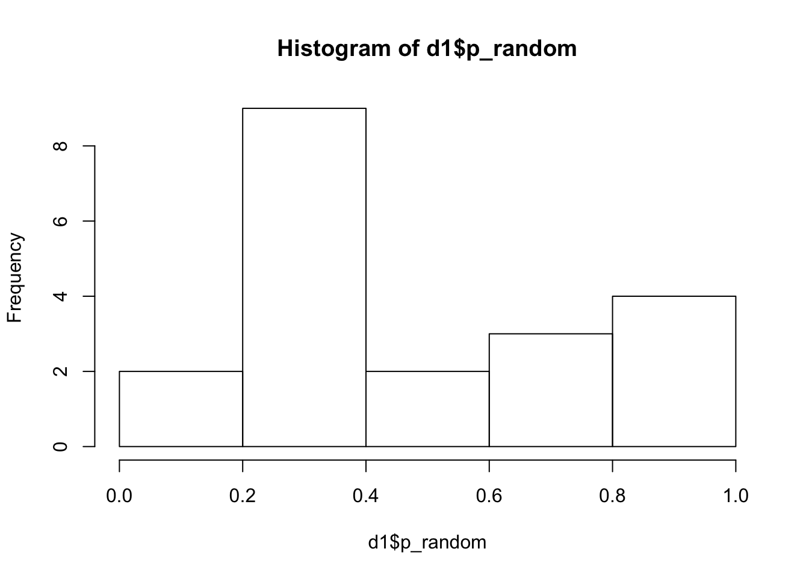
mean(d1$Qx_random)[1] 0.906612hist(d1$p_strat)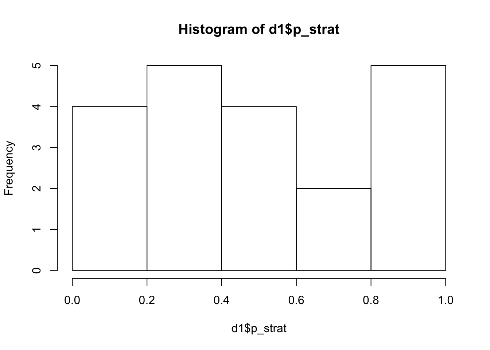
mean(d1$Qx_strat)[1] 1.074536This all looks well behaved to me given that there are only 20 replicates.
\(h^2 = 0.8\) , env=0, non-casual sites
d2 <- df %>% filter(case == "C2" & h2 == "h2-0.8" & env == "env-0", type == "nc")
hist(d2$p_random)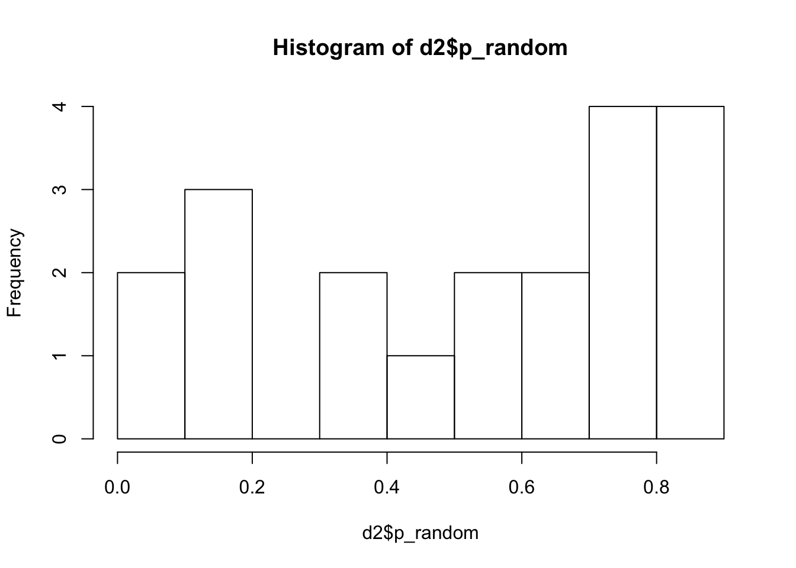
mean(d2$Qx_random)[1] 0.8929792hist(d2$p_strat)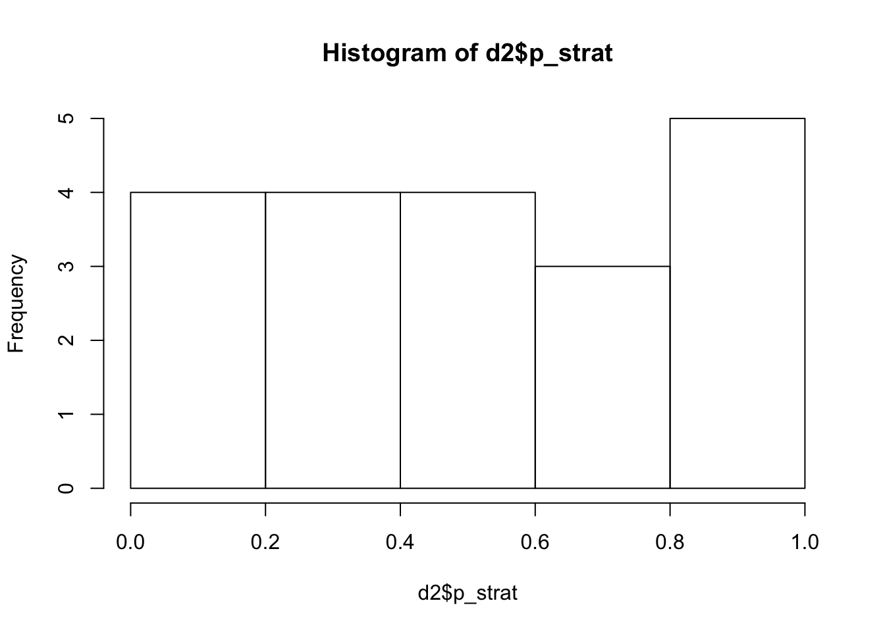
mean(d2$Qx_strat)[1] 0.8731285Hard to tell with only 20 reps but still looks reasonable-is to me.
\(h^2 = 0.8\) , env=2, casual sites
d1 <- df %>% filter(case == "C2" & h2 == "h2-0.8" & env == "env-2", type == "c")
hist(d1$p_random)mean(d1$Qx_random)[1] 0.906612hist(d1$p_strat)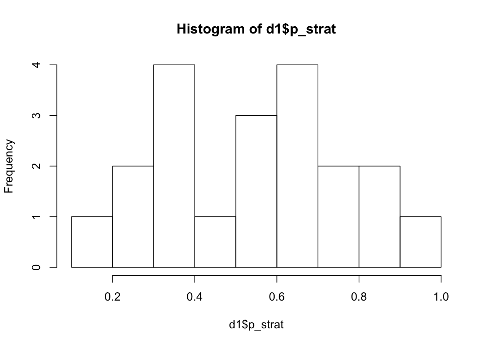
mean(d1$Qx_strat)[1] 0.5377328\(h^2 = 0.8\) , env=2, non-casual sites
d1 <- df %>% filter(case == "C2" & h2 == "h2-0.8" & env == "env-2", type == "nc")
hist(d1$p_random)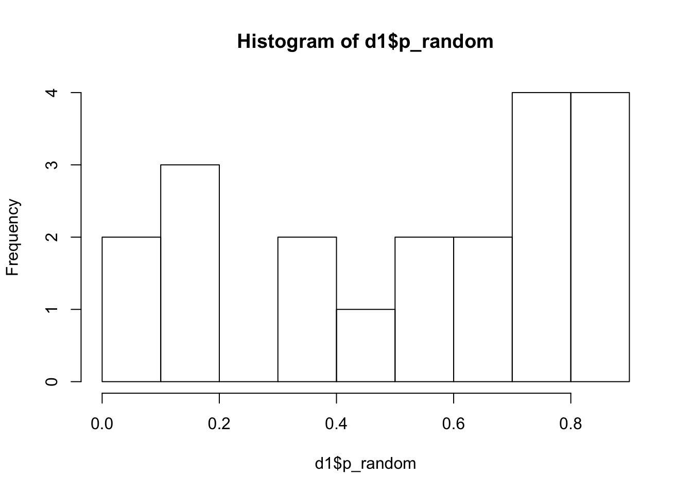
mean(d1$Qx_random)[1] 0.8929792hist(d1$p_strat)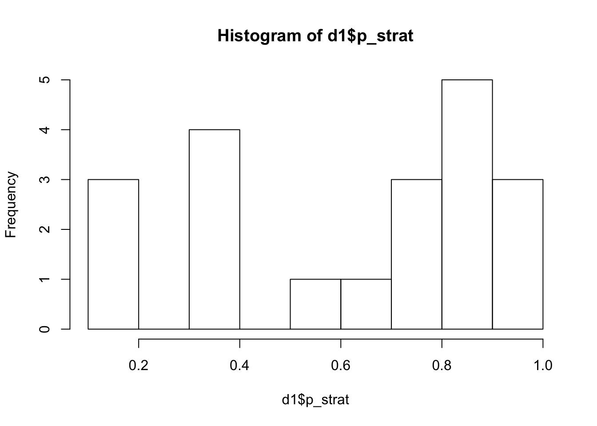
mean(d1$Qx_strat)[1] 0.5124923Its a little suspicious to me that when env=2 the average \(Q_x\) is less than the average \(Q_x\) for random. Hard to tell how suspicious but I need to go double check the draw phenotype step.
Conclusion, its hard to tell with so few reps but it just by inspection all the \(C2\) reps seem sort of reasonable (at least not something outlandish).
Now let’s look at the case where stratification should matter (i.e the test populations are more diverged).
\(h^2 = 0.8\) , env=0, casual sites
d1 <- df %>% filter(case == "C1" & h2 == "h2-0.8" & env == "env-0", type == "c")
hist(d1$p_random)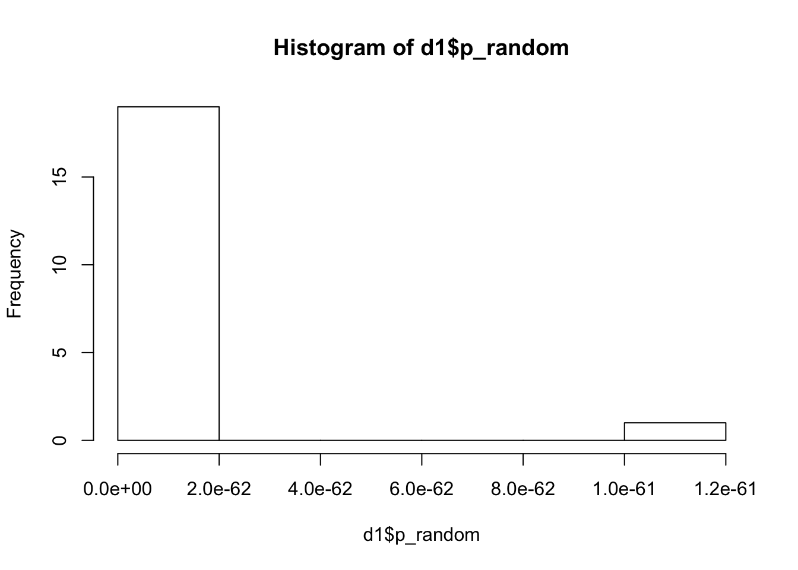
mean(d1$Qx_random)[1] 691.2621hist(d1$p_strat)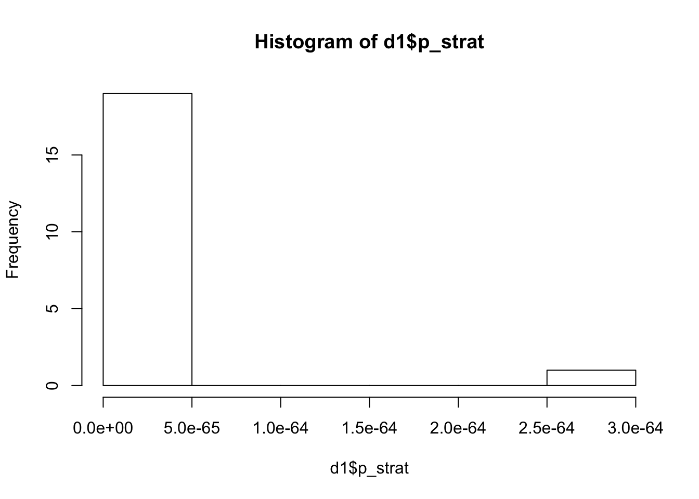
mean(d1$Qx_strat)[1] 695.4697Problem!! Why are they so big???? There is no stratification in the above example, there’s no reason either the random or the stratified phenotype should have such a large \(Q_x\) value.
\(h^2 = 0.8\) , env=2, casual sites
d1 <- df %>% filter(case == "C1" & h2 == "h2-0.8" & env == "env-2", type == "c")
hist(d1$p_random)mean(d1$Qx_random)[1] 691.2621hist(d1$p_strat)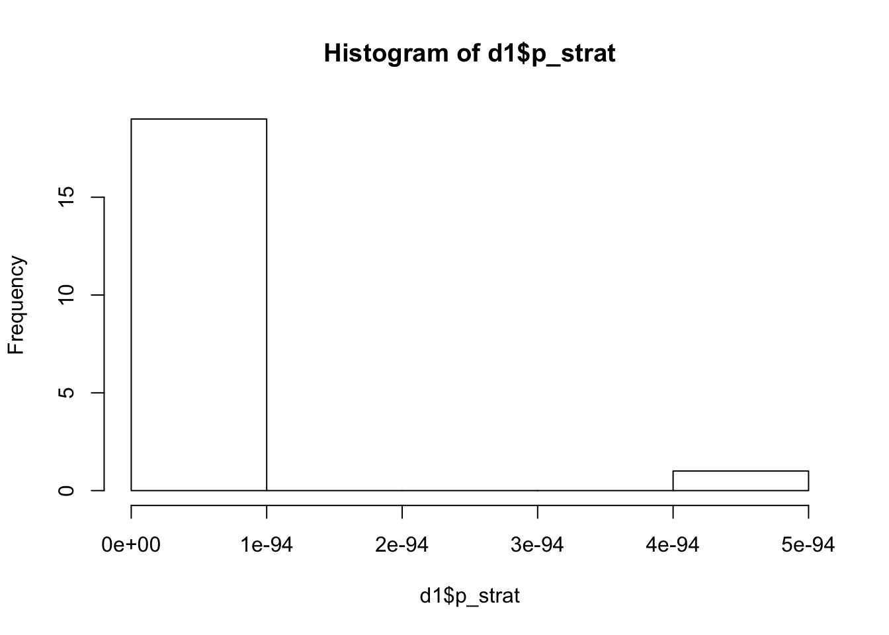
mean(d1$Qx_strat)[1] 759.2745When there is stratification the \(Q_x\) values are larger which we expect but still so big!
What does including \(T_m\) do?
\(h^2 = 0.8\) , env=2, casual sites, include \(T_m\)
d1 <- df %>% filter(case == "C1" & h2 == "h2-0.8" & env == "env-2", type == "Tm-c")
hist(d1$p_random)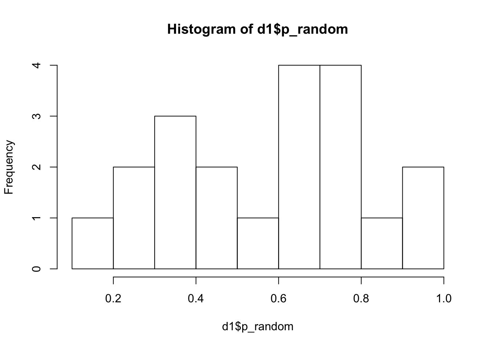
mean(d1$Qx_random)[1] 0.5114234hist(d1$p_strat)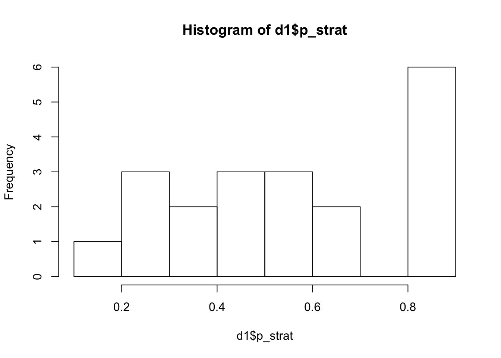
mean(d1$Qx_strat)[1] 0.574615Including \(T_m\) returns \(Q_x\) to a normal range.
sessionInfo()R version 3.6.2 (2019-12-12)
Platform: x86_64-apple-darwin15.6.0 (64-bit)
Running under: macOS High Sierra 10.13.6
Matrix products: default
BLAS: /Library/Frameworks/R.framework/Versions/3.6/Resources/lib/libRblas.0.dylib
LAPACK: /Library/Frameworks/R.framework/Versions/3.6/Resources/lib/libRlapack.dylib
locale:
[1] en_US.UTF-8/en_US.UTF-8/en_US.UTF-8/C/en_US.UTF-8/en_US.UTF-8
attached base packages:
[1] stats graphics grDevices utils datasets methods base
other attached packages:
[1] pgenlibr_0.3.1 dplyr_1.0.4 data.table_1.14.0 workflowr_1.6.2
loaded via a namespace (and not attached):
[1] Rcpp_1.0.6 plyr_1.8.6 highr_0.8 pillar_1.5.0
[5] compiler_3.6.2 later_1.1.0.1 git2r_0.28.0 tools_3.6.2
[9] digest_0.6.27 evaluate_0.14 lifecycle_1.0.0 tibble_3.1.0
[13] pkgconfig_2.0.3 rlang_0.4.10 DBI_1.1.1 yaml_2.2.1
[17] xfun_0.21 stringr_1.4.0 knitr_1.31 generics_0.1.0
[21] fs_1.5.0 vctrs_0.3.6 rprojroot_2.0.2 tidyselect_1.1.0
[25] glue_1.4.2 R6_2.5.0 fansi_0.4.2 rmarkdown_2.7
[29] purrr_0.3.4 magrittr_2.0.1 whisker_0.4 promises_1.2.0.1
[33] ellipsis_0.3.1 htmltools_0.5.1.1 assertthat_0.2.1 httpuv_1.5.5
[37] utf8_1.1.4 stringi_1.5.3 crayon_1.4.1